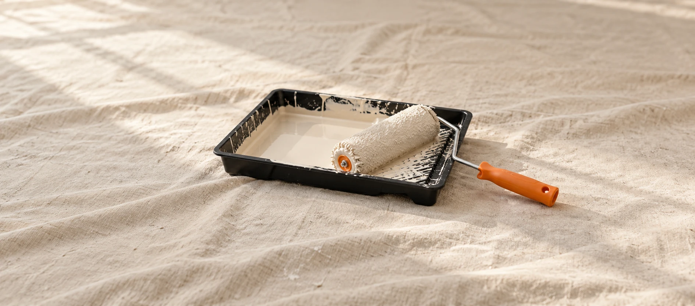

The painting itself is straightforward. What makes the difference is everything around it — how carefully the space is protected before a brush touches a wall, how surfaces are prepped, how the crew conducts themselves in your home, and what you're left with when they leave. We treat every job site like it belongs to someone who cares about it. Because it does.
You're kept informed throughout. If something comes up — a surface that needs more prep than expected, a colour that reads differently in natural light — we flag it before making a decision. No surprises mid-job, no assumptions made without your input.
Get a Free Written Estimate →Before any painting starts, floors are covered, furniture is moved and draped, hardware is taped or removed, and trim is masked. We protect your home as if damage wasn't an option. Because for us, it isn't.
Holes filled, cracks sanded, surfaces cleaned and primed where needed. Prep takes time and we don't skip it — it's what makes the finish look right in three years, not just the day we leave.
We keep the work area tidy throughout the job. Debris doesn't accumulate, drop sheets stay in place, and tools are stored when not in use. At the end of each day, the space is left as organized as we found it.
We communicate before and during the project — not just when something goes wrong. Start times, daily progress, any question that comes up. You're never left wondering what's happening in your own home.
We arrive at the agreed time. Drop sheets go down, furniture is moved, trim and edges are taped. The space is protected before a single brush is opened.
Holes filled, surfaces sanded, stains primed. This step takes as long as it takes — we don't rush it. Proper prep is what makes the paint bond and last.
First coat applied, allowed to dry fully before the second. We don't cut corners on dry time. Two full coats on every surface, three where the surface or colour demands it.
Cut-in edges checked, trim finished, any thin spots addressed. We walk the room with fresh eyes before considering the painting complete.
Drop sheets removed, furniture returned, floor cleaned. Everything put back exactly where we found it — or better. Then the walkthrough.
Thorough prep is what separates a professional paint job from a DIY one. We cover all floors and furniture, tape trim and edges, fill holes and cracks, sand surfaces where needed, and apply primer on bare or stained surfaces. Prep typically takes longer than the painting itself — and that's fine. It's what makes the finish last.
Yes. We move and protect all furniture as part of our standard prep. Floors are covered, items repositioned and draped. When we're done, everything goes back where it was. You don't need to empty a room before we arrive.
A single room typically takes one day. A full house interior can take three to five days depending on scope. Exterior projects vary more by size and condition. We give you a projected timeline in your written estimate so you know exactly what to expect.
Yes, in most cases. We work room by room where possible to minimize disruption. We'll talk through the sequence during the estimate so you can plan accordingly. For exterior work, there's no disruption to your interior at all.
We use premium-grade paints from Benjamin Moore, Sherwin-Williams, and Farrow & Ball on request. We can also match any existing colour or work from a swatch you provide. The brand and finish are always discussed and agreed on before we start.
Free written estimate within 24 hours. Professional prep, expert execution, clean job site. Serving Toronto and the GTA since 2009.